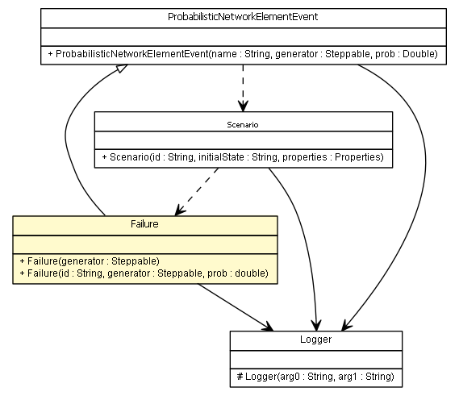

es.upm.dit.gsi.shanks.model.event.failiure
Class Failure

java.lang.Object
 es.upm.dit.gsi.shanks.model.event.Event
es.upm.dit.gsi.shanks.model.event.ProbabilisticEvent
es.upm.dit.gsi.shanks.model.event.networkelement.ProbabilisticNetworkElementEvent
es.upm.dit.gsi.shanks.model.event.failiure.Failure
es.upm.dit.gsi.shanks.model.event.Event
es.upm.dit.gsi.shanks.model.event.ProbabilisticEvent
es.upm.dit.gsi.shanks.model.event.networkelement.ProbabilisticNetworkElementEvent
es.upm.dit.gsi.shanks.model.event.failiure.Failure
public abstract class Failure
- extends ProbabilisticNetworkElementEvent
- Version:
- 0.3.1
- Author:
- darofar
|
Constructor Summary |
Failure(sim.engine.Steppable generator)
¡¡¡This constructor must be override!!! |
Failure(String id,
sim.engine.Steppable generator,
double prob)
|
| Methods inherited from class es.upm.dit.gsi.shanks.model.event.networkelement.ProbabilisticNetworkElementEvent |
addAffectedElement, addAffectedElements, addAffectedScenario, addAffectedScenarios, addPossibleAffectedElement, addPossibleAffectedElementField, addPossibleAffectedElementProperty, addPossibleAffectedElementState, addPossibleAffectedScenario, addPossibleAffectedScenarioField, addPossibleAffectedScenarioState, changeOtherFields, changeProperties, changeStatus, getAffected, getCurrentAffectedElements, getPossibleAffectedElements, getPossibleAffectedScenarios, removeAffectedElement, removeAffectedScenario, removePossibleAffectedElements, removePossibleAffectedScenarios |
| Methods inherited from class java.lang.Object |
clone, equals, finalize, getClass, hashCode, notify, notifyAll, toString, wait, wait, wait |
Failure
public Failure(sim.engine.Steppable generator)
- ¡¡¡This constructor must be override!!!
Failure
public Failure(String id,
sim.engine.Steppable generator,
double prob)
launchEvent
public void launchEvent()
throws ShanksException
- Description copied from class:
Event
- Used to generate the event.
- Overrides:
launchEvent in class ProbabilisticNetworkElementEvent
- Throws:
UnsupportedNetworkElementFieldException
UnsupportedScenarioStatusException
ShanksException
isActive
public boolean isActive()
- Returns:
- true if failure is active, false if not.
setAsResolved
public void setAsResolved()
isResolved
public abstract boolean isResolved()
- To know if a failure is resolved, the
- Returns:
- true if the failure is resolved, false if not
Copyright © 2011-2013 Grupo de Sistemas Inteligentes - Universidad Politécnica de Madrid. All Rights Reserved.